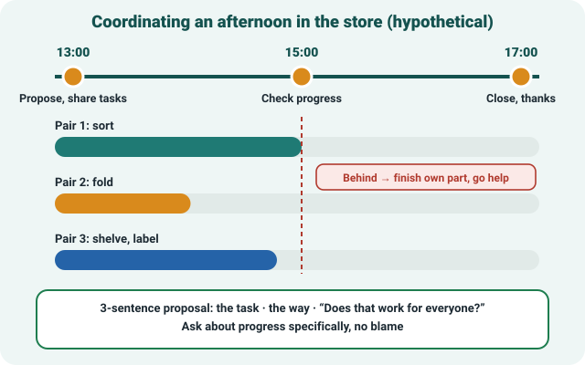

K9 · Leadership and developing others › Level 2 Starting
Speak up with a proposal and coordinate a small group task
This is "leadership without a title". How to make a task-sharing table is covered in Split work in a group project (K8). This lesson practises speaking up and coordinating.
1. Objectives
- Propose a way of working when nobody has spoken up, in 3 sentences, ending by asking for views.
- Coordinate a small task in 4 steps, until it is closed with the group.
2. Retrieval warm-up
- What are the 4 boxes of a small trial sheet?
- After a trial, what 3 lines go into an improvement suggestion?
Answers
- Old way; new way; what to measure; how long to try.
- What you tried, and for how long; the result before and after; your suggestion to keep, drop or try again.
Review: Try a small new way of working.
3. Explanation
Sometimes the whole group goes quiet. Everyone waits for someone else to speak first. The work drifts, and close to the deadline everyone rushes. At that moment, one person speaking up with a proposal can get the whole group started.
A proposal in 3 sentences:
A 3-sentence proposal
- Say what needs doing"We need to prepare Maria's leaving party before Friday."
- Propose how"I suggest we split it into 3 parts: present, cake, decorations."
- Ask for views"Does that work for everyone, or is there another way?"
The third sentence is very important. A proposal is not an order. You open the way, then let the group decide together.
Coordinating a small task: 4 steps.
1. Offer to coordinate 2. Share tasks, agree deadlines 3. Check progress midway 4. Close the result
Step 1. Offer to coordinate. "If everyone agrees, I'll coordinate this." At work, ask your manager first if it involves customers or money.
Step 2. Share tasks, agree deadlines. Each part has one person responsible and a clear deadline. Write it down and post it in the group chat.
Step 3. Check progress midway. Ask specifically, without blame. "Have you ordered the cake, Tom? Do you need any help?"
Step 4. Close the result. Tell the group the task is done and thank each person. If something should be done differently next time, write one line about it.
Lead by example with your own part. A coordinator who misses deadlines finds it hard to remind others. Your own part should be on time and up to standard. That is the most visible way to lead.
When the group does not agree with your proposal. That is fine. If the group chooses another way, do your part well within that way.
4. Workplace example
Hypothetical scenario. Six new employees at a small hotel are asked to clear and reorganise the linen store in one afternoon. Everyone stands looking at each other.
Kai speaks up:
"We need to reorganise the store before 5. I suggest 3 pairs: one pair sorts, one pair folds, one pair shelves and labels. Does that work for everyone?"
The group agrees. Kai posts in the group chat who does which part. At 3, Kai asks each pair how much is left. The folding pair is behind, so Kai finishes his own part and goes to help. At 5, Kai tells the supervisor it is done, and thanks the whole group.

Why this works: Kai's 3-sentence proposal asks for views. He shares tasks clearly, checks progress midway, and closes the result with the supervisor.
5. Practice
Hypothetical scenario. Your class has 2 weeks to make a video introducing your subject to final-year school students. After the first session, nobody has said anything about how to do it.
Write a 3-sentence proposal, then the 4 coordination steps you will take.
Hint 1
What parts does the video have: script, filming, editing, getting permission from the people filmed?
Model answer
Proposal: "We need to hand in the video in 2 weeks. I suggest 4 parts: script, filming, editing, getting permission from people who appear. Does that work for everyone?"
- "If everyone agrees, I'll coordinate."
- Post who is responsible for each part, with deadlines, in the group chat. Editing finishes 3 days before the hand-in date.
- At the end of week one, ask each person about progress.
- After handing in, tell the group, say thanks, and note one thing to do differently next time.
6. Self-check
Choose an answer. Every option has an explanation.
Question 1. Which sentence should end a proposal to the group?
-
Not quite. This sounds like an order. The group has not had a say.
-
Correct. Correct. Asking for views lets the group decide together and support it more easily.
-
Not quite. Without asking, you do not know whether the group agrees.
Question 2. Midway, one member has not done their part. Which way of asking fits?
-
Not quite. Blame makes it hard for them to say honestly where they are stuck.
-
Correct. Correct. A specific question and an offer of help unblock the work faster.
-
Not quite. Doing it without talking risks duplicated work and does not fix the cause.
Question 3. The task you would coordinate involves the shop's cash fund. What should you do first?
-
Not quite. At work, tasks involving money need your manager's agreement first.
-
Correct. Correct. Tasks involving customers or money need agreement from someone with authority.
-
Not quite. Leaving part undone means the group task is not completed.
Question 4. Why should the coordinator finish their own part on time?
-
Not quite. The aim is not to criticise anyone.
-
Correct. Correct. A coordinator who misses deadlines finds it hard to ask the group to meet theirs.
-
Not quite. There is no bonus here. The reason is to set an example for the group.
7. Reflection
- The last time your group went quiet, what stopped you from speaking up?
- Is your own part usually on time enough to set an example for the group?
8. Real-world application
Over the next 7 days, choose a small group task that nobody has taken on. Propose it in 3 sentences. If the group agrees, coordinate it until it is closed. Note one thing you will do differently next time.
9. Metadata
| skill | K9 · Leadership and developing others |
|---|---|
| level | Level 2 · Starting |
| group | N2, N3 |
| framework_map | WEF: Leadership and social influence; SkillsFuture CCS: Influence; Developing People; NACE: Leadership (reference only) |
| original | Vietnamese version |
| updated | 2026-11-14 |
Finish the lesson
Mark it as done and the site suggests reviews after 1, 3 and 7 days. The data stays on your device only.
Suggested reviews: